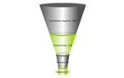
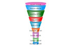
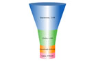
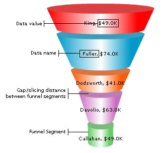

| Funnel Chart > Introduction | ||
| Funnel charts are basically used to plot streamlined data, e.g., plotting sales data for sales pipeline analysis. A funnel chart consists of various segments, each representing a data set. The height of the funnel segment with respect to the entire funnel depicts the value for that particular data set. Some of the funnel charts that you can make with FusionCharts Free are:
|
||
 |
 |
 |
| Anatomy | ||
| Let's have a look at a basic funnel chart, enlisting the various components of a funnel chart: | ||
|  | ||
A funnel chart consists of various funnel segments (separated from each other by a distance). Each funnel segment can have its individual properties like background, border etc. to help distinguish them from one another. The funnel segments at the bottom get tapered to form the tap of the funnel. On the top of each funnel is displayed the data name and value corresponding to that segment. Now that we know the basics of a funnel chart, let's try our hands at a sample funnel chart. |
||